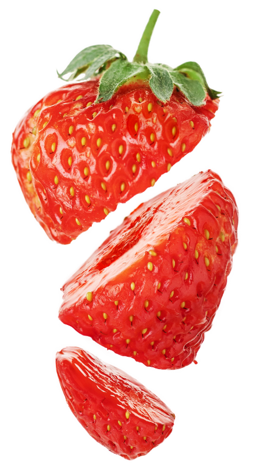

rot, wild, unwiderstehlich
Sie sind der ultimative Snack des Sommers und bringen die Sonne direkt auf deinen Teller. Erdbeeren sind absoluter Kult – und das völlig zu Recht. Hier erfährst du, warum die kleinen roten Früchte das Beste sind, was die warme Jahreszeit zu bieten hat!

Marmelade
Hol dir den Geschmack des Sommers in jede Jahreszeit. Ob dick auf warmes Buttertoast gestrichen oder als Klecks auf einem frisch gebackenen Scone – Erdbeermarmelade fängt die natürliche Süße der Frucht ein und verwandelt sie in einen reichhaltigen, gemütlichen Aufstrich, der jedes Frühstück zu einem besonderen Genuss macht.
Rezepte
Eis
Nichts geht über die klassische Erfrischung von Erdbeereis. Es verbindet reichhaltige, cremige Sahne perfekt mit der fruchtig-frischen Note echter Erdbeeren – ein zeitloser Dessert-Klassiker, der mit jeder einzelnen Kugel ein kühles Stück Sonnenbrand liefert.
Rezepte
Kuchen & Torten
Von eleganten Biskuit-Schichttorten bis hin zum schnellen Blechkuchen für das Wochenende – Erdbeeren verleihen jedem Gebäck eine wunderschöne Farbe und wunderbare Saftigkeit. Mit frischen Erdbeerscheiben und Schlagsahne geschichtet, ist ein Erdbeerkuchen das perfekte Highlight für jede Feier.
Rezepte
Smoothies & Shakes
Der perfekte Energieschub für den Tag oder einfach zum Genießen. Mixe sie mit Joghurt und Spinat für einen farbenfrohen, nährstoffreichen Frühstücks-Smoothie, oder püriere sie mit Vanilleeis und Milch zu einem Milchshake im Retro-Diner-Stil, der pure Nostalgie weckt.
Rezepte
Dessert
as ultimative Duo aus Eleganz und Genuss. Die knackige, edle Hülle aus dunkler, Vollmilch- oder weißer Schokolade passt perfekt zur saftigen, leicht säuerlichen Geschmacksexplosion einer frischen Erdbeere. Das macht diesen einfachen Snack zum unbestrittenen König auf jedem Dessertteller.
Rezepte
Erdbeeren pur
Das perfekte Fingerfood der Natur. Kalorienarm, aber voller Vitamin C und Antioxidantien: Eine Handvoll frischer, purer Erdbeeren ist der schnellste Weg, um den Heißhunger auf Süßes völlig ohne schlechtes Gewissen zu stillen.